MaxValu 富士河口湖店
9 月營業 06:00–23:30、836 個車位。鹽昆布、S&B 薑泥蒜泥、素麵、起司、杯麵與果凍先在這裡找。
開啟 Google Maps →茅乃舍調味料、鹽昆布、薑泥蒜泥與家人指定的日本食品和藥妝。照片指定品優先；沒有照片的品項，補上容易辨認的官方包裝。
✓ 勾選進度會自動保存在這台手機河口湖先完成一般食品與藥妝；品牌限定的茅乃舍留到 9/8 抵達羽田後補齊。
9 月營業 06:00–23:30、836 個車位。鹽昆布、S&B 薑泥蒜泥、素麵、起司、杯麵與果凍先在這裡找。
開啟 Google Maps →10:00–21:00。Primavista、FASIO、Rosy Rosa 等照片中的美妝用品集中在這裡找。
開啟 Google Maps →第 3 航廈 4F「Edo 食賓館（時代館）」、06:30–22:00。官方提醒這是小型 Corner，品項有限。
查看官方店鋪資訊 →高湯包是定番；梅味素麵沾醬屬春夏季節商品，看到就先拿。照片裡的「生薑燒醬」不是單純生薑醬油。
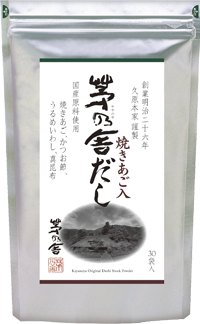
燒飛魚、鰹節、烏目沙丁魚與真昆布的基本和風高湯。30 袋裝官方價格 ¥2,268；行李不想太重可買 12 袋裝。
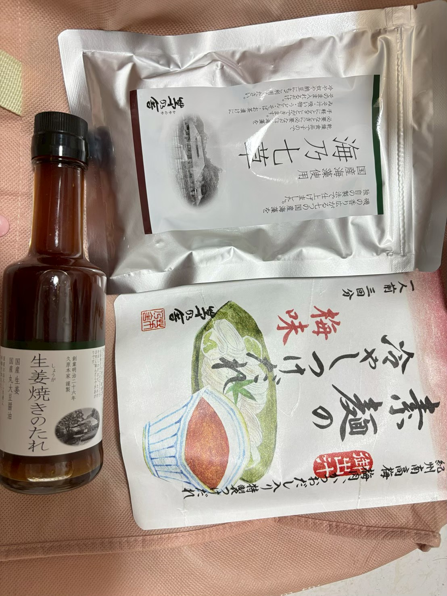
瓶裝的是「生薑燒肉醬」；白色梅圖袋才是你要的素麵沾醬，內含三回份。銀袋海乃七草是海藻配料／湯品類。
這三樣在一般大型超市比茅乃舍容易買；品牌找不到時，可接受同類替代。
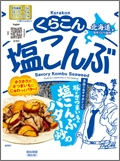
北海道昆布製成，拌飯、炒高麗菜或涼拌小黃瓜都方便。若缺貨可換 Fujikko「ふじっ子 塩こんぶ」。
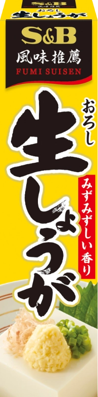
超市最容易辨識的黃色管裝。若常做炒菜，可改買「みじん切り生しょうが」保留顆粒口感。
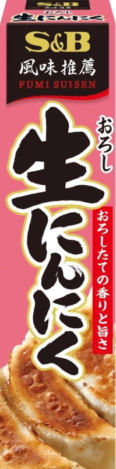
綠色管裝、用途最廣。想要明顯蒜粒口感則找「みじん切り生にんにく」。
這一區完全以附件照片為準；找不到相同品就先跳過，不要花太久追小眾商品。
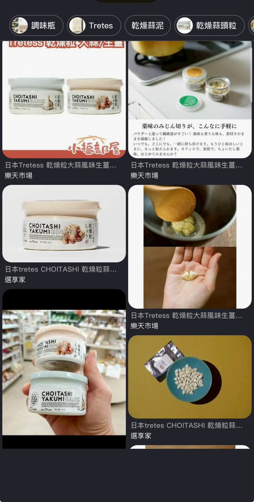
白色小罐、米袋造型外罩；乾燥顆粒遇水或醬汁後恢復口感。這是選品通路商品，不一定在一般超市，看到就買，找不到不必硬追。
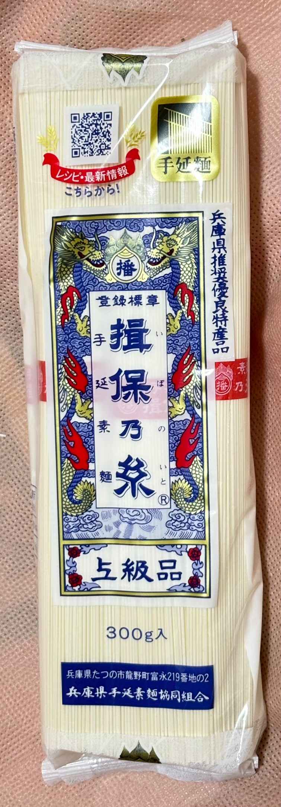
認準紅藍雙龍標籤與「上級品」。正好搭配茅乃舍梅味素麵沾醬。
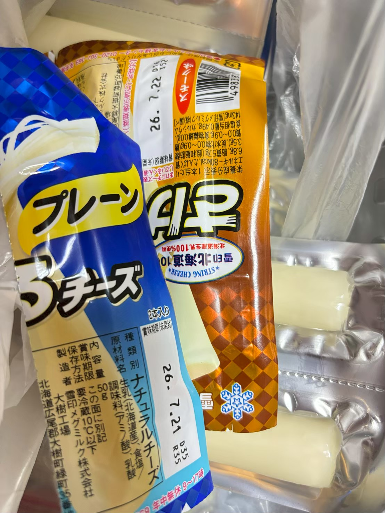
藍色「プレーン」包裝。旅途中吃可以；若要帶回台灣，需注意保冷與入境檢疫規定。
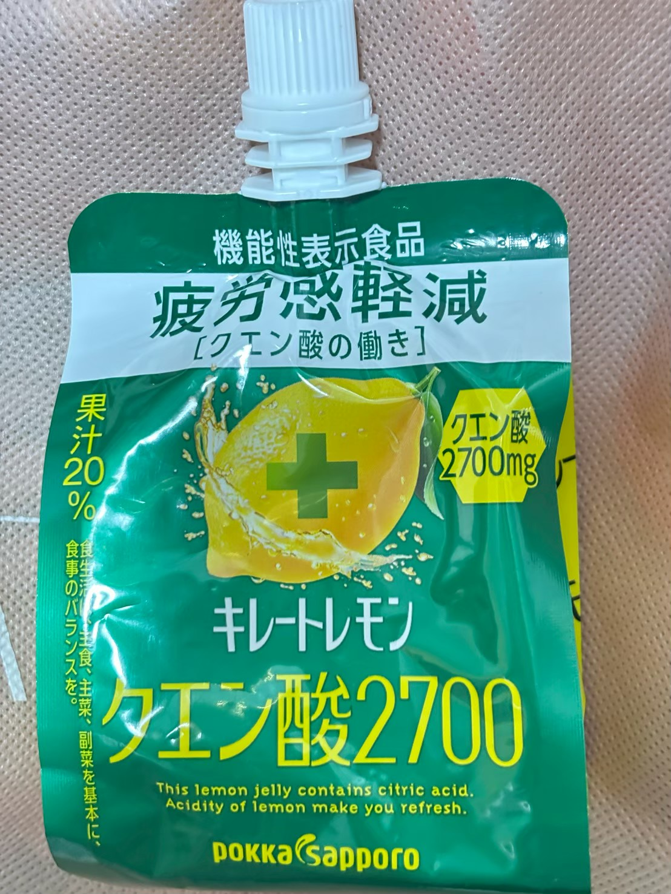
綠色吸嘴袋、檸檬酸 2,700mg；通常在飲料、能量果凍或冷藏區附近。
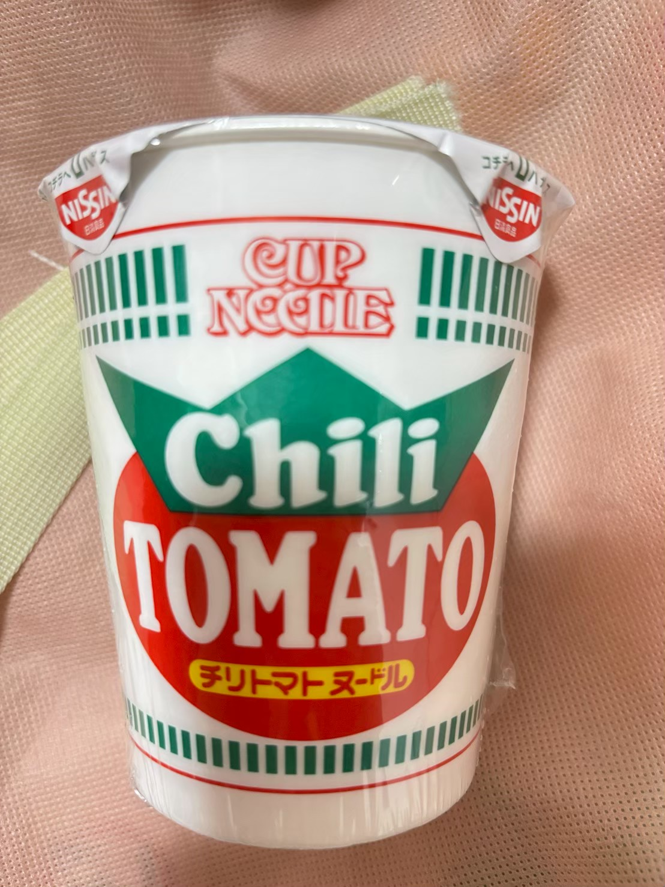
白杯、綠色 Chili、紅色 TOMATO；杯麵體積大，建議最後依行李空間決定數量。
附件沒有拍到所有完整品名，因此以照片比對包裝最準；購買時再確認色號與膚質版本。
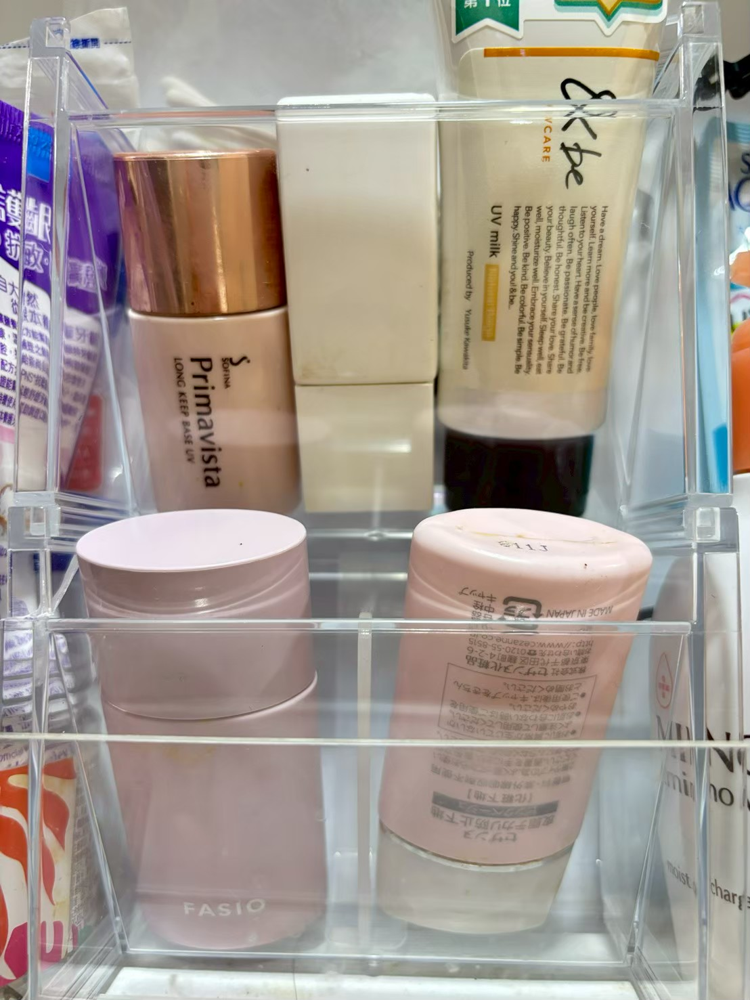
Primavista 瓶身可辨識到 Long Keep Base UV；另外還有 FASIO 粉色罐與管裝防曬。包裝可能改版，請直接開這張照片比對，並確認色號、SPF 與清爽／保濕版本。
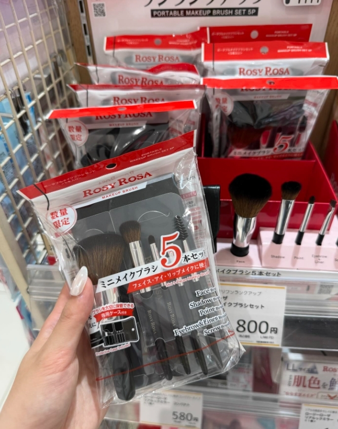
照片標價 ¥800；認紅白 ROSY ROSA 包裝與透明外袋，內容含 Face、Shadow、Point、Liner、Eyebrow。
商品與店鋪資料整理日期：2026/8/17。參考：茅乃舍高湯官方、茅乃舍麵露官方、Kurakon 鹽昆布、S&B 管裝調味料、MaxValu 富士河口湖店。價格及庫存以現場為準。